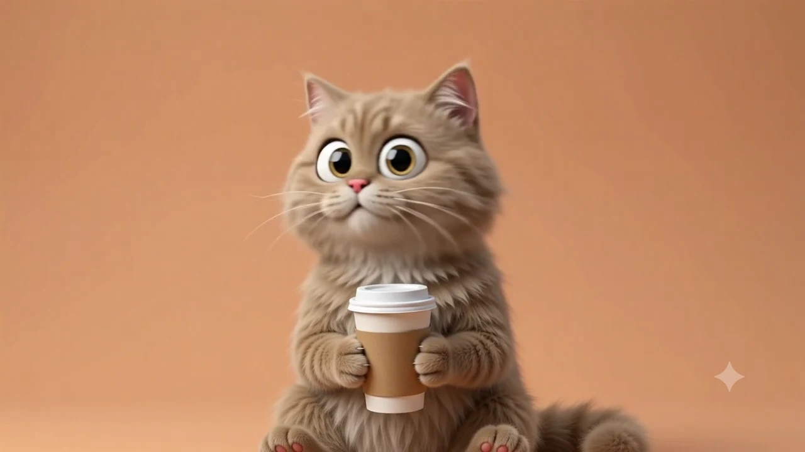

Мастерская Eclipse Library · 06.10.2026
От картинки
к живому герою.
Один персонаж, четыре секунды видео и 96 кадров. Пример показывает, как превратить готовую анимацию в управляемую сцену без видеоплеера и сторонних библиотек.

01 / Сначала — исходник
Сохраняем персонажа, меняем только окружение. В комплекте — исходный JPEG на сером фоне и уже готовый MP4 на карамельном фоне. Повторная генерация и загрузка в Google Flow здесь не выполнялись.
Keep the character exactly as is: same pose, same fur texture, same expression, same coffee cup in its paws, do not change the character in any way. Replace only the background with a warm coffee shop backdrop: a soft gradient from deep coffee brown on the left to warm caramel orange on the right, subtle vignette, cozy ambient lighting, no visible text or objects. Match the original camera angle and the lighting already falling on the character.
02 / Анимация с неподвижной камерой
Промпт требует неподвижную камеру, спокойный корпус, движения глаз и головы и одинаковые первый и последний кадры. Полный предоставленный промпт сохранён в материалах ниже.
Важное отличие готового ролика: он не бесшовный. К концу кот поднимает стакан. Мы не выдаём это за точное выполнение генеративного промпта: повороты головы используются для курсора, питьё — для отдельной кнопки. Вертикальное слежение и полный круг обзора не имитируются.
03 / Все кадры, без повторного декодирования видео
FFmpeg извлекает все 96 кадров без пропусков. Горизонтальная PNG-лента имеет размер 30 720 × 180 px. WebP такой ширины не поддерживается, поэтому для загрузки в браузер подготовлены атласы 12 × 8: 5760 × 2160 для компьютера и 3840 × 1440 для телефона.
ffmpeg -i coffee-cat.mp4 -vf "scale=320:180,tile=96x1" -frames:v 1 horizontal-sprite.png ffmpeg -i coffee-cat.mp4 -vf "scale=480:270,tile=12x8" -frames:v 1 -quality 85 atlas.webp
Браузер загружает только один подходящий атлас. Координата указателя выбирает кадры 28–56 (нумерация с нуля), центр — 40. Интерполяция зависит от времени, а не частоты экрана. Canvas рисуется только при смене кадра; после успокоения цикл останавливается.
04 / Управление без мыши
На телефоне проведите пальцем по сцене. Клавиатурой: Tab до кота, затем ← / → и Home. Кнопка «Остановить» отключает движение. Системное уменьшение движения оставляет статичный кадр; изменение настройки применяется без перезагрузки. Скрытая вкладка не продолжает анимацию.
Материалы и исходники
- Исходное изображение JPEG
- Оригинальный ролик MP4, 4 секунды
- Горизонтальная лента всех 96 кадров
- Промпты и инструкция для Codex
- Характеристики и SHA-256 файлов
- Покадровая логика JavaScript · Стили CSS


Материалы предоставлены пользователем для этого примера. Отдельная открытая лицензия не заявлена; публикация здесь не означает разрешения на любое стороннее использование. Маркер в исходном видео сохранён.